Karina Bittencourt Blog locations photos photoshoot portraits headshots broomfield westminster Branding Photography serving Broomfield Colorado KB Photographer KBPhotographer KBPhotography

A. Snowboarder | Snow Experience
The snow was great, the sun was shining, and the temporary
park was open for business. A. was absolutely killing it on
the jumps and grabs, it was so fun to watch!
We started our day with a warm up lap, then headed over to
explore the groomed blue runs, where we were on the lookout
for side hits and moguls to play around on. The whole day was
filled with stoke, big air, and unforgettable memories.
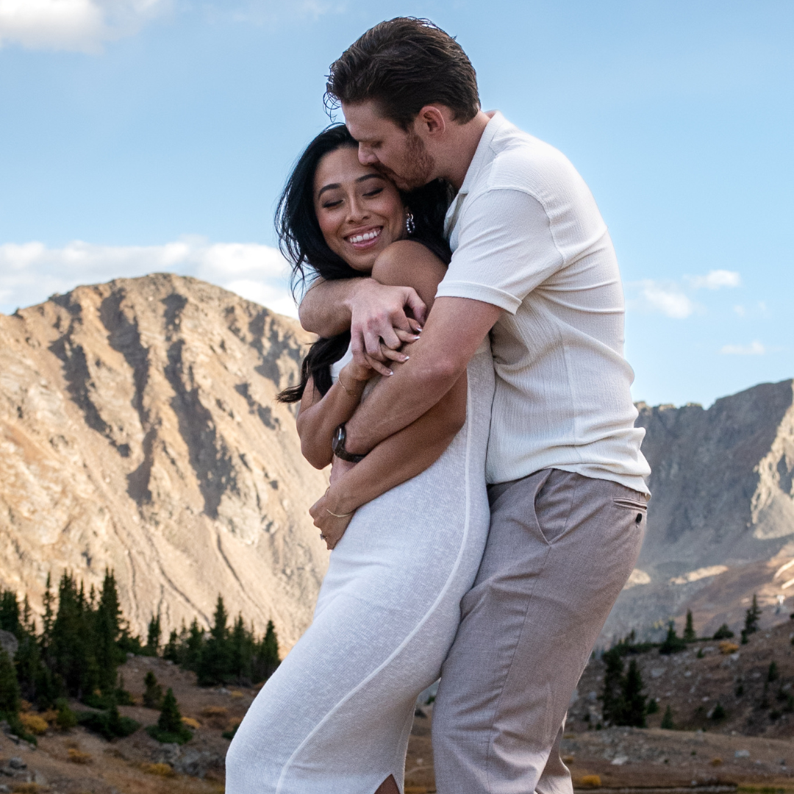
Engagement Session | Loveland Pass Lake near Dillon, Breckenridge, and Keystone
I recently had the pleasure of capturing an engagement session at the stunning Loveland Lake, nestled near Loveland Pass between Dillon and Breckenridge. We were blessed with beautiful blue skies and a breathtaking display of yellow and orange foliage that perfectly framed the couple's love story. It was the ideal backdrop for those special save-the-dates and invitations!
Continue reading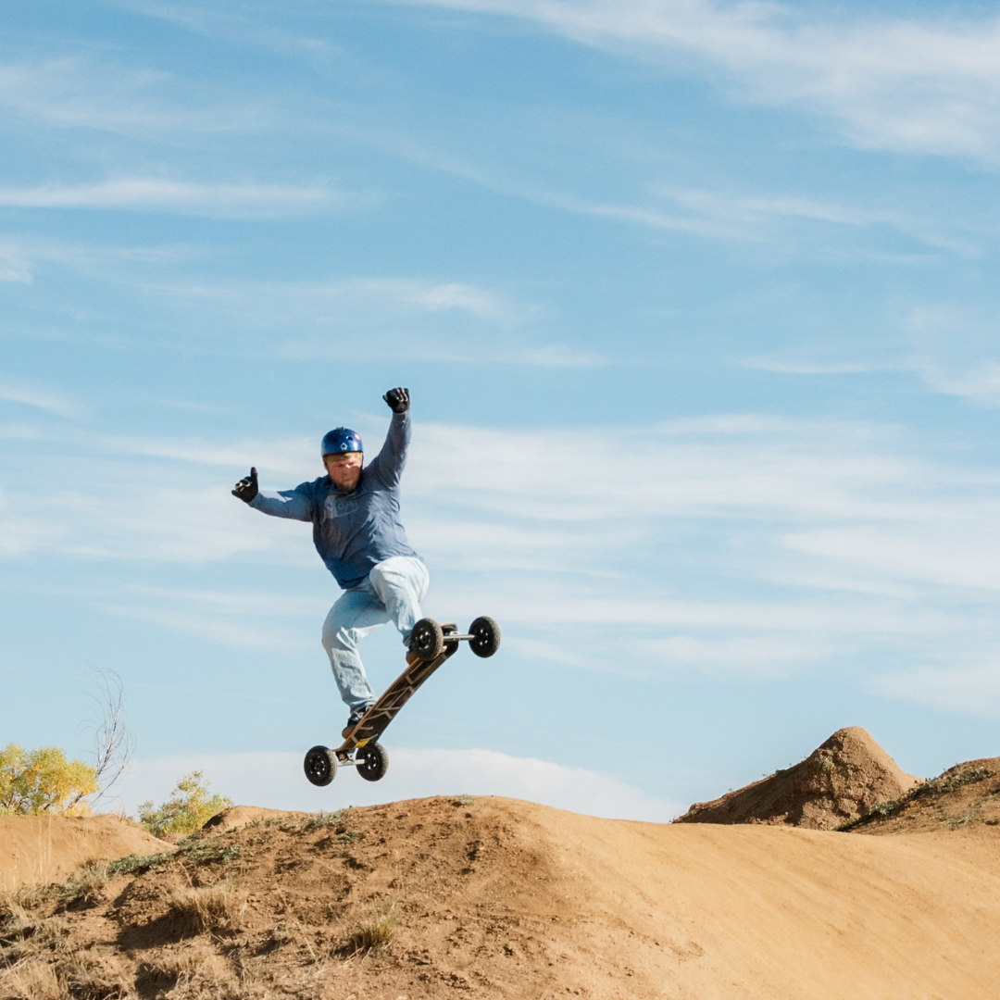
Mountainboarding | McKay, Ruby Hill, Colorado Springs Bike Park
Hey there! I wanted to share our latest hobby—mountainboarding! It’s a lot like snowboarding, but on dirt and grass instead of snow. My husband recently discovered the sport, and he’s been absolutely loving every ride.
Continue reading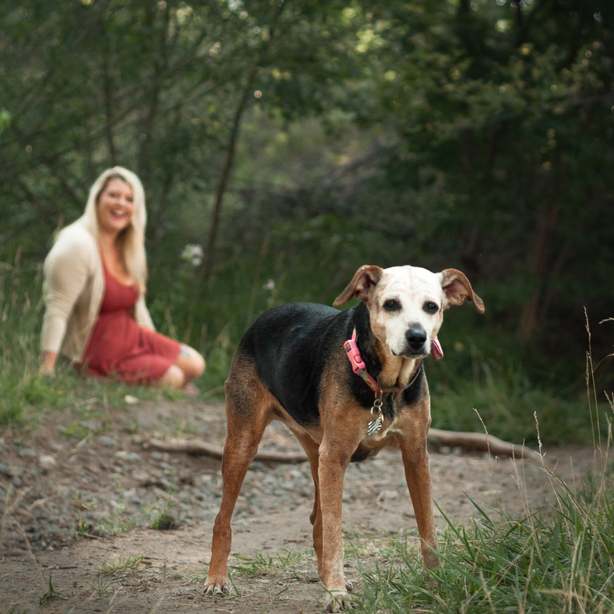
Tessa | Dog Portraits at local park in Lafayette
As a lifestyle photographer who loves the outdoors and exploring new locations, it was so wonderful to combine my passion for wilderness with capturing precious memories for E and Tessa. There's something so magical about photographing elderly dogs - they have a certain wisdom and grace that shines through in every shot.
Continue reading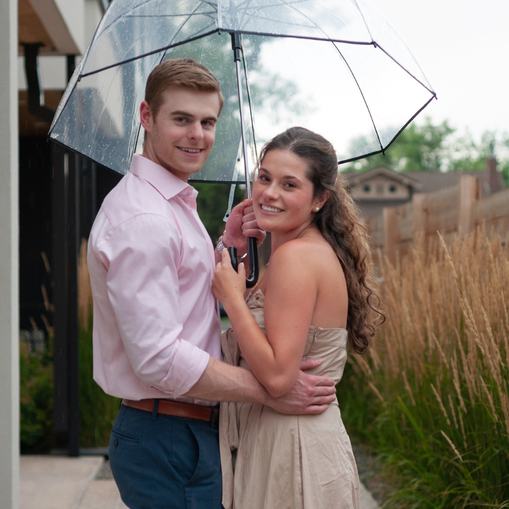
Couples | Surprise | Proposal | Engagement | Denver, Colorado
Imagine this: You and your partner have just moved into your dream home, a cozy little house with a rooftop that offers stunning views of the surrounding area. You're settling in nicely, unpacking boxes and making it feel like home. Little do you know, your partner has a surprise up their sleeve that will change your lives forever.
Continue reading.png)
Family Portraits at Bear Lake | Moraine Park | Forest Canyon Overlook | Rocky Mountain National Park
Recently, I had the privilege of photographing a lovely couple who traveled all the way from the East Coast to Colorado for their engagement session. They chose the stunning Rocky Mountain National Park
Continue reading.png)
R&L Engagement @ Bear Lake, Rocky Mountain National Park
Recently, I had the privilege of photographing a lovely couple who traveled all the way from the East Coast to Colorado for their engagement session. They chose the stunning Rocky Mountain National Park
Continue reading.png)
Maternity Session at Lost Gulch Overlook in Boulder Colorado with Brazilian Photographer
Visiting a breathtaking location for the first time. The setting? The awe-inspiring Lost Gulch Overlook. The day was dark and stormy, ominous clouds gathering in the sky, but the excitement in the air was palpable. The anticipation of capturing this beautiful family in such a stunning backdrop was a thrill.
Continue reading
Elopement and Wedding Locations in Colorado Mountains
Have you ever dreamed of saying "I do" with the majestic Rocky Mountains as your witness? Picture yourself and your beloved standing on a cliff overlooking a breathtaking valley, the sun setting behind the peaks turning the sky into a canvas of vibrant colors. This is the magic of eloping in the Colorado mountains near Denver.
Continue reading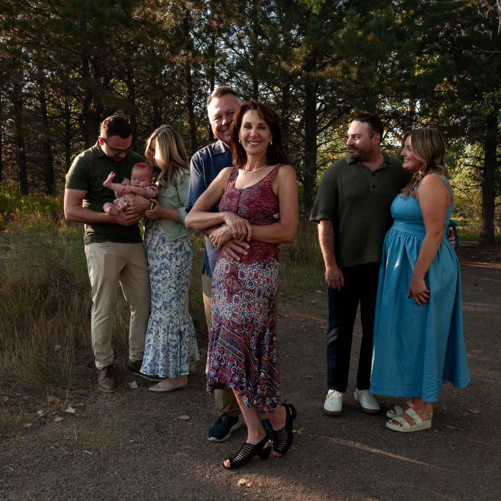
Family Photos in Lakewood, Colorado
I recently had the most heartwarming family photography session at Belmar Park in Lakewood, Colorado, and I can't wait to share how special it was.
Continue reading.png)
Maternity Session at Genesee Park near Golden, Colorado
As an outdoorsy and adventurous lifestyle photographer, I was thrilled to capture Karly's glowing beauty against the backdrop of the stunning natural scenery.
Continue reading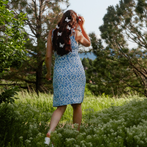
Capturing Stunning Outdoor Portraits in Colorado
Colorado offers some of the most stunning backdrops for outdoor portraits, whether you're drawn to the rugged beauty of the mountains or the vibrant energy of the city centers. Here's a guide to help you prepare for your portrait session and make the most of this breathtaking state.
Continue reading
Navigating Photography Permits for Your Photo Session at Hildebrand Ranch Park
Planning a photo session in the stunning wilderness of Hildebrand Ranch Park in Jefferson County, Colorado? This outdoorsy, adventurous location is perfect for capturing your love story amidst breathtaking backdrops. Here’s everything you need to know about photography permits to make your session seamless and memorable.
Continue reading.png)
Why Your Photographer's Height Might Matter
When planning your photo sessions, you probably think about the location, outfits, and poses. But have you ever considered your photographer's height? For tall couples, like those where one partner is 6'3" and the other is 6'5", the height of your photographer can actually make a big difference.
Continue reading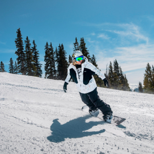
Skiing and Snowboarding Portraits near Dillon, Keystone, and Breckenridge in Colorado
If you’re planning a trip to the stunning Dillon, Colorado, get ready for some unforgettable moments—and, of course, some amazing photos to go with them. As a lifestyle photographer who loves the great outdoors, I’m here to help you capture the magic of your vacation.
Continue reading.png)
Preparing for your session
Your portrait session is a celebration of you, your journey, and the beauty of the present moment. Here’s how you can make the most of your upcoming session:
Continue reading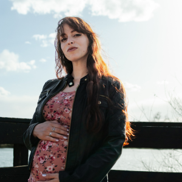
Maternity Session at Belmar Park
I had the absolute pleasure of shooting maternity photos with this amazing new mom recently. We decided to head over to Belmar Park in Lakewood, Colorado for the backdrop, and let me tell you, the nature vibe was on point!
Continue reading
Elopement and Wedding Locations
Discover breathtaking elopement and wedding locations in the Colorado mountains near Denver. Explore stunning landscapes, from RMNP to Loveland Pass, and get personalized guides tailored for your special day. Perfect for couples looking to say "I do" amidst nature's beauty.
Continue reading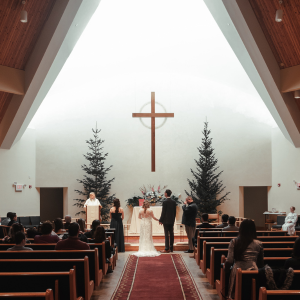
Micro Wedding in Washington
In this blog post, I'm diving into why I love micro weddings. From the cozy vibes and heartfelt moments to the chance to focus on your unique story, these intimate celebrations truly capture what matters most. Come along as I share why I'm all about creating unforgettable memories, one small and beautiful wedding at a time.
Continue reading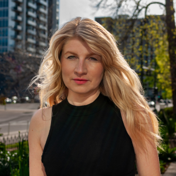
Headshots in Downtown Denver
Join us for a laid-back maternity photo session in Lakewood, Colorado. We had a great time capturing natural, joyful moments amidst the area's beautiful scenery. From peaceful parks to gentle sunlight filtering through the trees, this session was all about celebrating the journey of motherhood in a relaxed and beautiful setting. Check out the blog to see how Lakewood's charm adds a special touch to these precious memories.
Continue reading
Maternity Session in Lakewood Colorado
Join us for a laid-back maternity photo session in Lakewood, Colorado. We had a great time capturing natural, joyful moments amidst the area's beautiful scenery. From peaceful parks to gentle sunlight filtering through the trees, this session was all about celebrating the journey of motherhood in a relaxed and beautiful setting. Check out the blog to see how Lakewood's charm adds a special touch to these precious memories.
Continue reading
Landscapes
In this vast expanse of wilderness, I found a different kind of beauty. The towering peaks of the Rocky Mountains stood proudly against the sky, their jagged edges painting an awe-inspiring silhouette.
Continue reading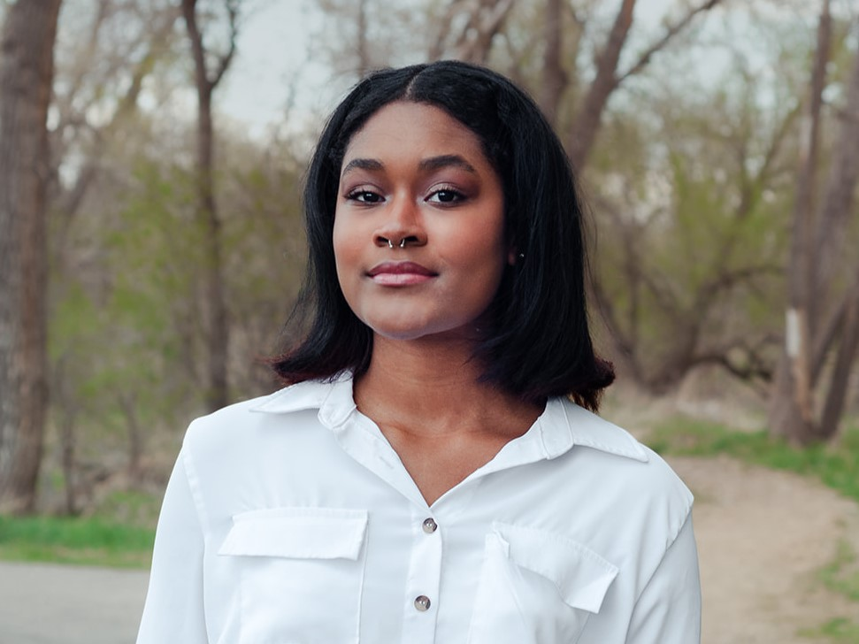
Khi | Headshots
Creating headshots for your personal brand is so important, especially if you're looking to make a connection with your community. It's a great way to show off your personality and let people get to know the real you.
Continue reading.jpg)
Donna | Snowboarder
Donna wanted to capture some awesome shots of her shredding in the mountains to share with her friends and document her new hobby. It was such a pleasure to spend the day with her on the slopes, capturing her infectious energy and enthusiasm for snowboarding.
Continue reading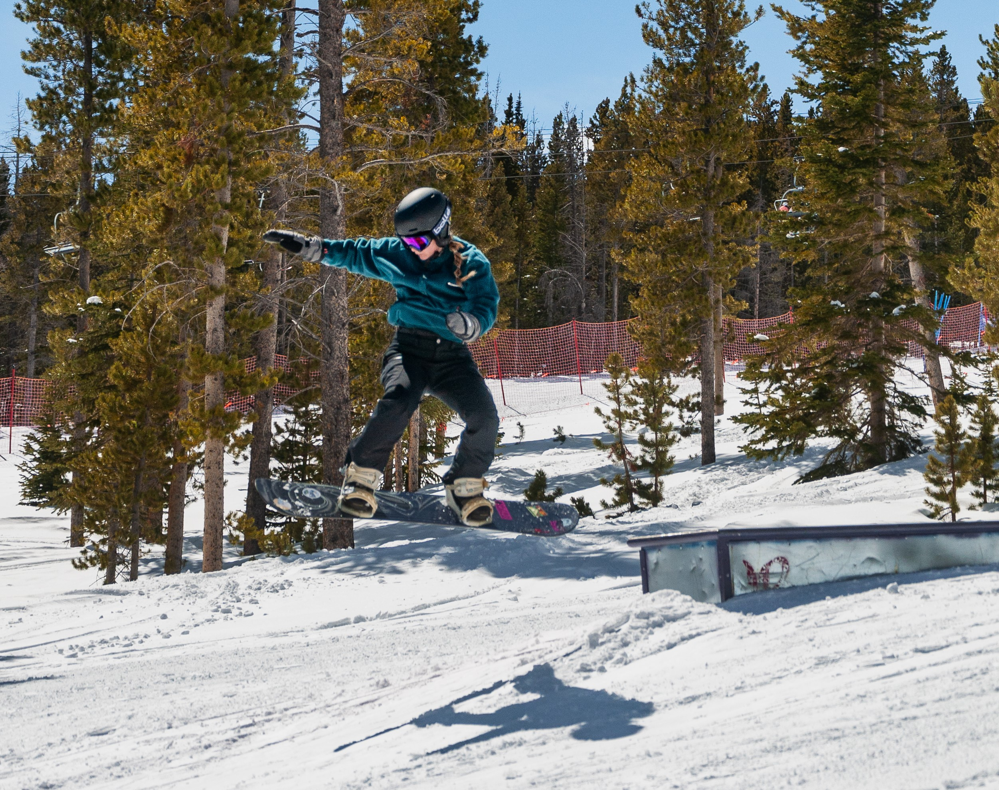
Flávia | Snowboarder
Flávia reached out to me to capture some photos of her shredding the slopes at Breckenridge resort in Colorado, where she has been spending the winter season. It's amazing to see her adventurous spirit and shiny personality shine through in every shot.
Continue reading.jpg)
Keystone Resort | Colorado
Winter in Colorado is truly something magical. The way the snow glistens as it blankets the mountains, the crisp chill in the air, and the adrenaline-fueled excitement of hitting the slopes - it's a season that holds so much beauty and thrill.
Continue reading
Pet Photography
Imagine a world where every moment is a precious memory waiting to be captured. Where the innocence of a dog's playful antics is frozen in time, forever etched in the corridors of our hearts.
Continue reading
Nettie | Fitness Session
I recently had the opportunity to work with someone incredible named Nettie. Nettie is not only a personal trainer but also a bodybuilder competitor. She approached me for a photoshoot, and I must say, it was an amazing experience.
Continue reading
Sam | Fitness Session
Sam is this cool model who reached out to me asking if I could capture his fitness journey, and of course, I couldn't resist! We decided to hit up this local gym called Train Station Fitness Center and let me tell you, it was like no other gym I'd ever seen.
Continue reading
Brad | Fitness Session
Have you ever wondered what it's like to spend a day at the gym with a bodybuilder? Well, let me take you on an exciting journey into the world of health and fitness.
Continue reading